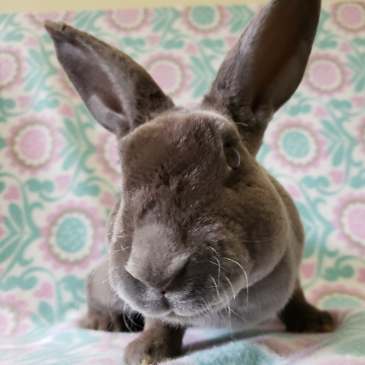

Violet
Breed: Mini Rex
Sex: Female
Age: 4 Years, 11 Months
Weight: 6.4 Pounds
Bio
Poor Violet was set free to live on her own outdoors. By the time a neighbor spotted her, she'd been outside over
the winter and spring had come. Violet is very wobbly with a presumed neurological condition. She was covered in
ticks and really struggles to move around, with her wobbly, stiff walk. She falls over fairly frequently.
Despite her troubles, Violet is SO SWEET. She loves to be petted and just craves attention. We were unable to
diagnose the cause of her condition through blood tests and a visit to a neurologist. Violet was stable enough to
be spayed, but does remain in need of special housing and care. Please help her with good wishes and support for
her veterinary needs if you can!
The best part of Violet's story is she is bonded to her best buddy
Curly, another sanctuary rabbit. Violet and Curly cuddle all day and life is great if you ask them :)
Want to Support Me?
To support me, or any of the sanctuary rabbits at the IHRS, please Donate to our GoFundMe if you are able.